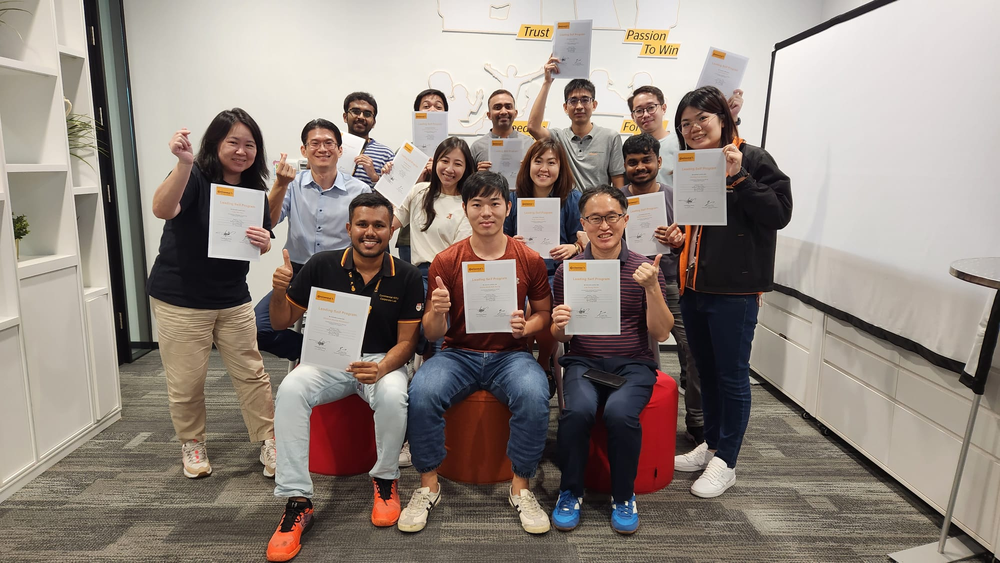

Leading Self Program: My DISC Report
Published on Jun 28, 2023
About Leading Self Program
The Leading Self Program (LSP) is a program provided by Fish Camp Learning and sponsored by Continental Automotive that aims to enhance the soft skills of its employees. In this program, DISC is used to assess our personality.
About DISC
The DISC profile traces its roots back to the early 1920s when it was introduced by psychologist William Moulton Marston. Marston's model aimed to understand human behavior by identifying four primary types of behavioral expression based on a person's perception of themselves in relation to their environment. Today, the DISC profile serves as a comprehensive tool for comprehending behavior strengths and limitations, enhancing communication styles, recognizing the diverse needs of others, and valuing and accepting individuals. It is particularly valuable for fostering effective teamwork as it enables individuals to adapt and collaborate with different styles, ultimately strengthening relationships and promoting overall effectiveness in a variety of settings.
About My DISC Report
Based on the DISC report, I am a Designer Style (C & D, but predominately C). As a Designer, I am a highly task-oriented individual who is sensitive to problems. People often perceive Designers as prioritizing task planning and completion over considering others' feelings. I am driven and have an effective problem-solving approach. However, due to my desire for tangible results, I may come across as unfeeling or distant at times. My decision-making is based on facts rather than emotions, and I tend to be quiet and cautious in trusting others.
Being a Designer, I excel in analytical thinking and have a high intellect as I dedicate myself exclusively to tasks. I value fact-based techniques and reject quick fixes. Commitment is essential to me, and I expect others to uphold their commitments as well. My competitive nature drives me to use facts strategically. Quality is of utmost importance, and I firmly believe that a job should be done right or not done at all. I maintain high standards in both my work and personal life, emphasizing accuracy and precision.
At times, I can become too absorbed in my work and struggle to delegate tasks or accept help from others. I have a strong desire to gather all the necessary facts and ensure I have comprehensive information before making decisions. While I recognize the need to be more sensitive to the needs of others, I feel that taking the time to gather information leads to better decision-making, even if it may be perceived as a delay by others.
My motivation lies in leading groups and influencing others, whether they are associates, coworkers, or friends. I take the responsibility of leadership seriously and make important decisions promptly. My confidence naturally draws others to follow my lead.
In social settings, I tend to avoid being the center of attention and choose my friends carefully. I approach new relationships with caution and may appear skeptical of others' promises. However, once someone proves their reliability, I am willing to invest more time and trust in the relationship.
Others see me as a versatile individual whom they rely on to break up monotony and routine. I occasionally prefer to work independently rather than within a team, reflecting my individualistic nature. Some may perceive me as restless as I tend to move quickly from one task to the next.
As a perfectionist, I am willing to put in the effort to achieve high-quality results. However, I am also sensitive to criticism due to my meticulous approach. I gather a significant amount of information before making choices, believing that if everyone processed information the same way I do, we could maintain a higher level of quality.
General Characteristics of Designer Style People:
- Analytical
- High ego strength
- Problem Solver
- Extremely Task Oriented
Designer Style People Motivated By:
- Work and project completion
- Power and authority to design and implement solutions
- Not having to needlessly socialize or play politics
- Being provided the necessary tools to achieve success
Designer Style People Ideal Environment
- Being able to design and refine
- Challenging tasks and activities
- Projects that produce tangible results
- Recognition for their analytical abilities
My Personal Growth Areas as CD Style
- Strive to be an "active" listener.
- Be attentive to other team members' ideas until everyone reaches a consensus.
- Be friendlier and more approachable.
- Develop a greater appreciation for the opinions, feelings and desires of others.
- Put more energy into personal relationships and team support.